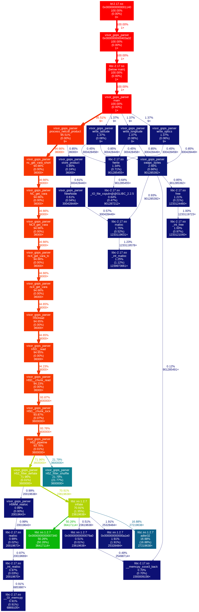

| Component | Specification |
|---|---|
| Processor | 40 CPU, Intel Xeon Silver 4114 CPU @ 2.2GHZ |
| Memory | 251 GB |
| Component | Specification |
|---|---|
| Processor | 40 CPU, Intel Xeon Silver 4114 CPU @ 2.2GHZ |
| Memory | 251 GB |
| Component | Specification |
|---|---|
| Asset | Gordon, Conrad, Koehr, Gaffney |
| Queue | Standard, HIE, gpu |
| Platform | Total time (minutes) |
|---|---|
| NRL Developer | 23.02 |
| NRL Server (single) | 4.00+ |
| NRL Server (all, batch) | 6.00+ |
| NRL Server | 33.92 |
| Conrad | 27.89 |
| Gaffney | 27.32 |
| Koehr | 26.25 |
| Gordon | 28.48 |
SonarQube Results SonarQube Results v1.1.13
visor_gops_parser Call Graph 
Region: World (global) on 2020/01/01
ncdump -h.| Statistic | Gaffney | Koehr | Gordon | Conrad |
|---|---|---|---|---|
| Avg Exe Time (s) | 1,638.92 | 1,574.80 | 1,708.95 | 1,673.40 |
| Avg Exe Time (m) | 27.32 | 26.25 | 28.48 | 27.89 |
| Avg Memory Use (GB) | 4.38 | 4.92 | unk | unk |
| Predominant Queue | GPU | HIE | standard | standard |
Added functionality to select the number of times to split the GOPS input file and which (if any index to select):
| Index (of split) | Split | Results |
|---|---|---|
| Tested an index of -1 | using split of 9. | Failed, expected and error message provided. |
| Tested an index of 0 | using split of 9. | Passed, output as expected. |
| Tested an index of 1 | using split of 9. | Passed, output as expected. |
| Tested an index of 2 | using split of 9. | Passed, output as expected. |
| Tested an index of 3 | using split of 9. | Passed, output as expected. |
| Tested an index of 8 | using split of 9. | Passed, output as expected. |
| Tested an index of 9 | using split of 9. | Failed, expected and error message provided. |
| Tested an index of 19 | using split of 9. | Failed, expected and error message provided. |
| Tested an index of -1 | no inputs given. | Failed, expected with split defaulting to 9 and message about index being in error. |
| Tested an index of 0 | no inputs given. | Passed, output as expected. |
| Tested an index of 1 | no inputs given. | Passed, output as expected. |
| Tested an index of -1 | using split of 8 | Failed, expected and error indicated minimal ranges. |
| Tested an index of 0 | using split of 8 | Failed, expected and error indicated minimal ranges. |
| Tested an index of 1 | using split of 8 | Failed, expected and error indicated minimal ranges. |
| Tested an index of -1 | using split of 20 | Failed, expected and error indicated minimal ranges. |
| Tested an index of 0 | using split of 20 | Failed, expected and error indicated minimal ranges. |
| Tested an index of 1 | using split of 20 | Failed, expected and error indicated minimal ranges. |
Output from Slice 0 was compared to the default number of slices, all slices at once (sequential), and the multi-cpu solution with the following results:
| filename | Checksum |
|---|---|
| md5sum ./202106050000_a_490_lmi_0.out | 6e9a60641c49fd402f824983e3615343 |
| md5sum ./20210729_restuls/all_0.out | 6e9a60641c49fd402f824983e3615343 |
| md5sum ./20210729_restuls/Nine_202106050000_a_490_lmi_0.out | 6e9a60641c49fd402f824983e3615343 |
Output from logs where metrics are gathered such as number of good versus bad records, percent coverage and related output are completely consistent across all log outputs.
Thus proving consistent results across multiple invocations.
{kind=link}
{kind=link}